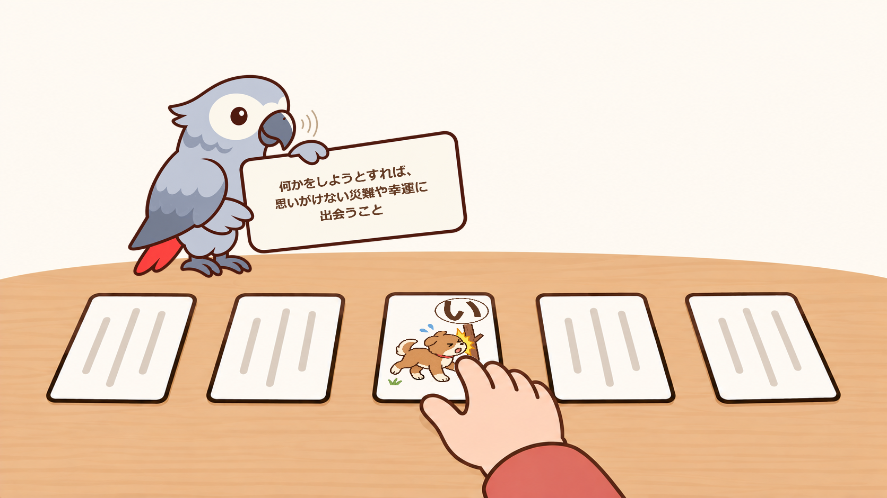

初級編
C列にことわざ（必要であればD列にその読み方）を入力します。A列・B列は空欄でOKです。
取り札を並べ、Yomokaがことわざを読み上げたら、対応する札を取ります。
2人で遊ぶときも、Yomokaに読み手になってもらえば、かるたを楽しめます。
また、子どもは画面を見ながら、大人は画面を見ずに遊ぶことで、ちょっとしたハンデになります。
市販のことわざかるたは、Yomokaを使えば読み手がいなくても楽しめます。CSVに読み札の内容を入力するだけで、Yomokaが読み手の代わりに読み上げます。
入力する内容を変えれば、同じかるたを使って、遊び方や学習方法を変えることもできます。
C列にことわざ（必要であればD列にその読み方）を入力します。A列・B列は空欄でOKです。
取り札を並べ、Yomokaがことわざを読み上げたら、対応する札を取ります。
2人で遊ぶときも、Yomokaに読み手になってもらえば、かるたを楽しめます。
また、子どもは画面を見ながら、大人は画面を見ずに遊ぶことで、ちょっとしたハンデになります。
A列にことわざの意味（必要であればB列にその読み方）、C列にことわざ（必要であればD列にその読み方）を入力します。
Yomokaがことわざの意味を読み上げた後、ことわざを読み上げます。
意味を聞いてことわざを思い出してから答えを聞くことで、意味とことわざを結びつける練習になります。

A列にことわざの意味（必要であればB列にその読み方）を入力します。C列・D列は空欄にします。
Yomokaがことわざの意味だけを読み上げます。
意味を聞いて、対応することわざの札を探して取ります。
ことわざを思い出す練習や、意味とことわざを結びつける学習に使えます。